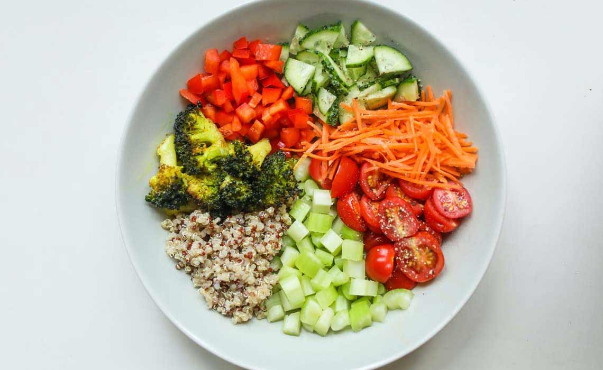
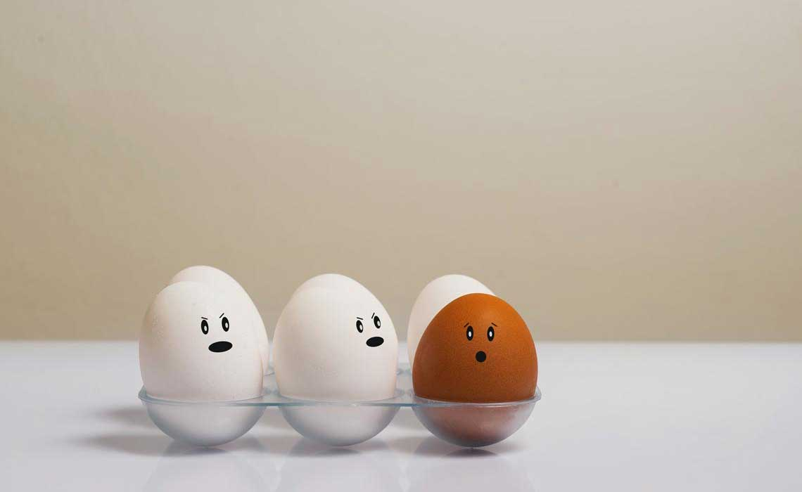
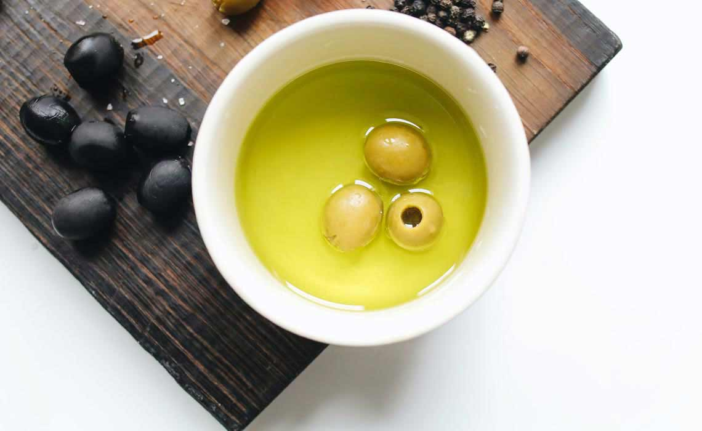

減肥瘦身已經編成現在全民愛美的女子都在做的事情，小編想請問一下大家，心目中的理想體型是什麼樣的身材呢？是纖瘦的身材，還是凹凸有致健康的身材。如果是前者，「熱量控制減重法」的確是瘦下來的最快途徑。不過透過熱量控制減重時，最先掉下來的是肌肉量呢，身體的代謝速度也會為了保留熱量而變慢，自動調節為「省能源模式」，最終將發生肌肉減少、體力下滑、體溫也下降。並且還可能會有容易疲勞的悲劇呢。我推薦大家選擇「蛋白質減重法」。

近年來以蔬菜為主食減重的美女越來越多，這些追求美麗與健康的減肥的人他們覺得吃肉會變胖也對身體有害，因此三餐都以蔬菜為主，長期下來，你不僅無法促進雞肉的增生，就算你瘦了，身體也會變得鬆垮垮，毫無線條可言。
然而「蛋白質減重法」可以控制你的脂肪與熱量的攝取量，同時攝取足夠的蛋白質，搭配輕鬆的運動就能促進雞肉增生。所以這樣才能打造讓人夢寐以求的緊緻的身材。
說到減肥，應該有不少人會立刻想到說「要忍耐餓肚子的痛苦」，或者是採取其他飲食的限制呢。
控制攝取的熱量當然是必要的手段之一，因為你不想辦法提升基礎代謝率，又不限制攝取的熱量的話，絕對是不可能瘦的下來，因為當你血糖不足腦袋需要糖分的時候，餓肚子的感受會更明顯，要想在減重的時候，擺脫忍耐餓肚子的痛苦，最適合的解決之道，莫過於蛋白質的食物了。
蛋白質比碳水化合物或是脂肪更能增加飽足感，並且再不限制的飲食下，減少食物的攝取，蛋白質飲食還可以增加產熱效應，讓我們在用餐的時候感覺包飽腹感，增加能量消耗及抗餓，蛋白質通過胃部的速度比較慢，從分解到被小腸吸收為止，會在體內停留較長的時間，所以當你的胃部感覺到有東西填滿的時候，吃飽的感覺是可以維持比較久的。
不過如果你正在減肥，才剛吃進去，然後又覺得肚子餓，滿腦子都是食物，或者是你的心情不好，就會暴飲暴食狂吃導致復胖的人，這個很可能是你的蛋白質攝取不足造成的。推薦給大家蛋白質飲食兩個重點：

攝取優質的蛋白質，動物性食品大部分都是屬於優質蛋白質，它可以提供我們所需要的必須胺基酸。例如在植物性的食物中，黃豆、黑豆、豆製品。還有避免不健康的蛋白質，油炸類的還有加工食品那些最好不要吃，而且也不建議直接飲用高蛋白的喔，應該吃食物原型。
大家都知道東方人的飲食都是吃米飯、面類為主，一旦這些吃太多，攝取大量的糖類，血糖值快速的上升，人體就會開始分泌大量的胰島素，而且胰島素的濃度越高，相對你的血糖下降的幅度也會越大，血糖過度降低的時候，腦神經細胞的活動量就會降低，造成飯後疲倦，昏昏欲睡，每次吃飽都想睡覺，大家有沒有被我說中呢？

這一點應該是很多人都不知道的秘密，積極攝取優質脂肪讓你邊吃邊瘦，由於減少了糖類的攝取，因此必須補充足夠的油脂跟能量。建議可以多吃牛油、奶油等動物性脂肪，或者是橄欖油、酪梨油、椰子油、荏胡麻油、亞麻仁油等健康油品。但是要注意不要吃乳瑪琳，含有反式脂肪的油品，原來攝取好油的好處這麼的多，有助提供人體所需能量和飽足感！預防失智症、心血管疾病，並且能提升新陳代謝，減少脂肪儲存。除此之外，他還可以平衡我們的壓力，然後幫助我們放鬆有助於我們的睡眠品質，這麼多的好處，小編已經迫不及待去吃肉肉了（不過還是要均衡飲食啦～）
好啦，今天就和大家分享到這裡囉！希望大家都能穿下美美的衣服，展現你最好的身材，下期再見啦～